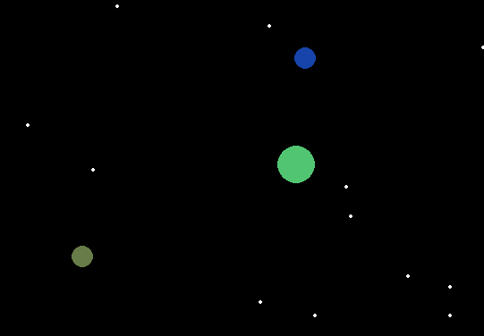
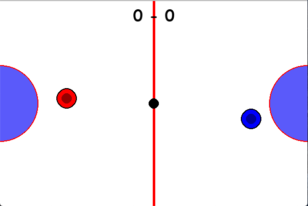
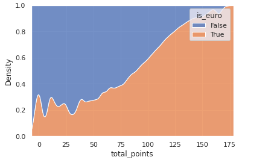
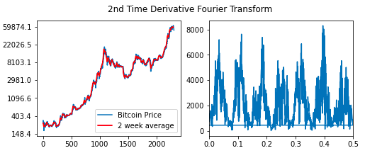
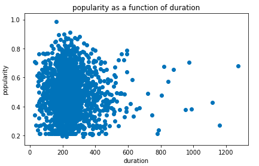
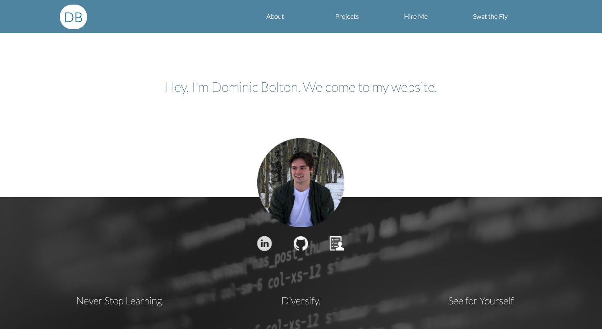
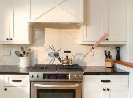

Gravity Simulator
This project was an excersize in teaching myself the basics of object-oriented programming. It was also a chance to use some of the physics I learned at unversity in a way that showcases my programming progress and how I can apply what I alreay know.

Air Hockey
I made a two player Air Hockey game usig PyGame. The most challenging part of this project was programming how the puck bounces off of the border. The puck would get stuck and bounce back and forth on the border because I had the puck's velocity reverse when it hit the border. I fixed this by always having the puck bounce back away from the border, depending on which border it was rather than having the same functionality for all the borders.
Ski Jumping Analysis
The sport of ski jumping is characterized by a discrepancy in performance of individuals from different countries. Athletes from a set of countries (mostly european countries and japan) consistently outperform those from the other countries. Ski Jumping Canada noticed this and I volunteered my data analysis skills to help them determine the root causes of this discrepancy so that they may compete at a higher level on the world stage.
kPredicting Bitcoin
This ongoing project is an opportunity to use some of the math I learned at university, along with some of what I've learned about data analysis since to find patterns in bitcoin price data. This project taught me to find a balance between listening to the data and using my intuition. I've had to rethink how I've looked at this problem a few times but now I may have found some useful patterns in the data.
Song Popularity
This school project was my first experience outside of a physics lab using large data sets to make predictions. This project was my first experience making code that focussed on readability and rigorous testing. Code for analysing data in physics labs usually doesn't need to be readable or tested as long as it gets the job done. This was the first time I had to think about how other people could read and apply my code and it permanently changed the way I write code for the better.
This
I built this website to teach myself the basics of front end web development. I didn't use any frameworks and just coded everything using pure HTML, CSS, and JavaScript because I wanted to learn exactly how these languages work and complement each other.
Fly Swatter Game
Just building a static website didn't give much opportunity to learn much JavaScript, so I added a little game. Making this game was an opportunity to reapply what I learned making little games in PyGame in a new language. It was also my first experience making menu screens. This forced me to think about the exapandability of my code in a way I hadn't before.